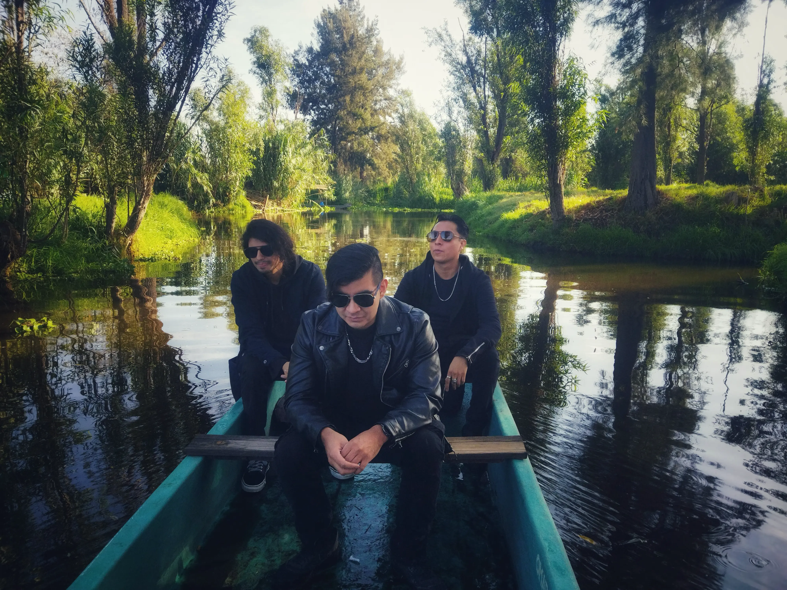

Fotos
Pueblo Muerto
En este Sencillo titulado "Pueblo Muerto" nos adentramos en una de las tradiciones más poderosas de México: el Día de los Muertos. Cada imagen en esta galería captura la esencia de la muerte como celebración y recuerdo. Inspirados por esta festividad ancestral, mostramos el vínculo entre la vida y la muerte.
Donde los muertos descansan
En este EP titulado "Donde los muertos descansan" decidimos mostrar y tomar como inspiración principal el lugar donde vivimos Xochimilco, Ciudad de México, lugar donde asi mismo fue creada la banda Cryterio. Un lugar lleno de misterio y una naturaleza oculta, en peligro de una existencia provocada por la principal plaga de este mundo, el Humano.
